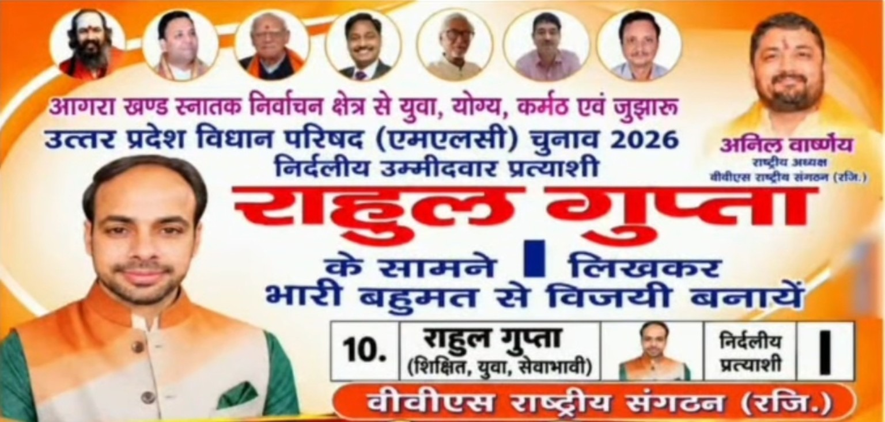

मतदान: 23 अक्टूबर 2026, शुक्रवार · सुबह 8 बजे से शाम 4 बजे तक
मतपत्र पर नाम के सामने | लिखकर अपनी वरीयता दर्ज करें
मतपत्र का नमूना
| क्रम | प्रत्याशी का नाम | चुनाव | वरीयता |
|---|
| 10. | राहुल गुप्ता निर्दलीय प्रत्याशी | निर्दलीय | □ |
| मतपत्र पर वास्तविक क्रम और निर्देश आधिकारिक मतपत्र से अवश्य मिलाएँ। |
मतदाता विवरण / Voter information
खोज परिणाम में उपलब्ध PDF पेज का लिंक मिलेगा। पूरा पता, भाग संख्या, क्रम संख्या और मतदान केंद्र मूल सूची से सत्यापित करें।
महत्वपूर्ण: अभी उपलब्ध डेटा अलीगढ़, भाग संख्या 104 की अपलोड की गई सूची के टेक्स्ट इंडेक्स पर आधारित है। हाथरस की पूरी सूची और अन्य भाग अभी शामिल नहीं हैं। OCR में वर्तनी की त्रुटि हो सकती है; अंतिम पुष्टि आधिकारिक PDF/मतदाता सूची से करें। यह वेबसाइट आधिकारिक निर्वाचन आयोग की वेबसाइट नहीं है।